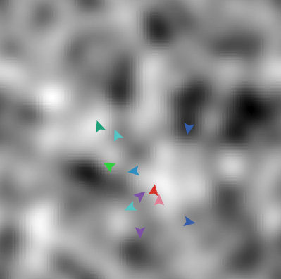

Particle swarm optimization
Table of Contents
These notes are directly copied from the PSO model included in NetLogo, created by Uri Wilensky.
What is it?
Particle swarm optimization (PSO) is a search/optimization technique in the field of machine learning. Although PSO is usually employed on search spaces with many dimensions, this model demonstrates its use in a two dimensional space, for purposes of easier visualization.
Formally speaking, there is some unknown function \(f(x,y)\), and we are trying to find values for \(x\) and \(y\), such that \(f(x,y)\) is maximized. \(f(x,y)\) is sometimes called a fitness function, since it determines how good the current position in space is for each particle. The fitness function is also sometimes called a "fitness landscape", since it may be comprised of many valleys and hills.
One approach (random search) would be to keep randomly choosing values for \(x\) and \(y\), and record the largest result found. For many search spaces this is not efficient, so other more "intelligent" search techniques are used. Particle swarm optimization is one such technique. Particles are placed in the search space, and move through the space according to rules that take into account each particle's personal knowledge and the global "swarm's" knowledge. Through their movement, particles discover particularly high values for \(f(x,y)\).
This model is closely based on the algorithm described by Kennedy and Eberhart's original paper (see reference below). However, this model is meant to demonstrate the principle, rather than be an exact replica. Some alterations were necessary to account for using a toroidal (wrapping) world, and to enhance the visualization of the swarm motion. Also, the function being optimized is discrete (based on a grid of values), rather than continuous.
How it works
Each particle has a position \((xcor, ycor)\) in the search space and a velocity \((vx, vy)\) at which it is moving through that space. Particles have a certain amount of inertia, which keeps them moving in the same direction they were moving previously. They also have acceleration (change in velocity), which depends on two main things.
- Each particle is attracted toward the best location that it has personally found (personal best) previously in its history.
- Each particle is attracted toward the best location that any particle has ever found (global best) in the search space.
The strength with which the particles are pulled in each of these
directions is dependent on the parameters
ATTRACTION-TO-PERSONAL-BEST and ATTRACTION-TO-GLOBAL-BEST. As
particles move farther away from these "best" locations, the force of
attraction grows stronger. There is also a random factor about how
much the particle is pulled toward each of these locations.
In this model, the particle swarm is trying to optimize a function that is determined by the values in the discrete grid of cells shown in the view. The landscape is created by randomly assigning values to each grid cell, then performing diffusion to smooth out the values, resulting in numerous local minima (valleys) and maxima (hills). This function was chosen merely for illustrative purposes. As a more plausible example of a real application of PSO, the variables \((x,y,z,...)\) might correspond to parameters of a stock market prediction model, and the function \(f(x,y,z,...)\) could evaluate the model's performance on historical data.
The model runs until some particle in the swarm has found the "true" optimum value (which is 1.00).
